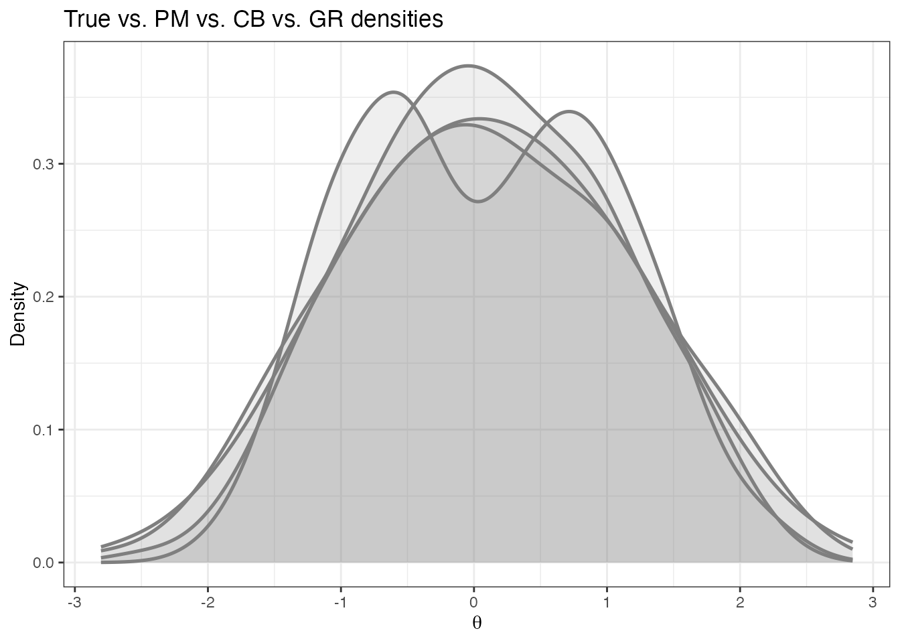
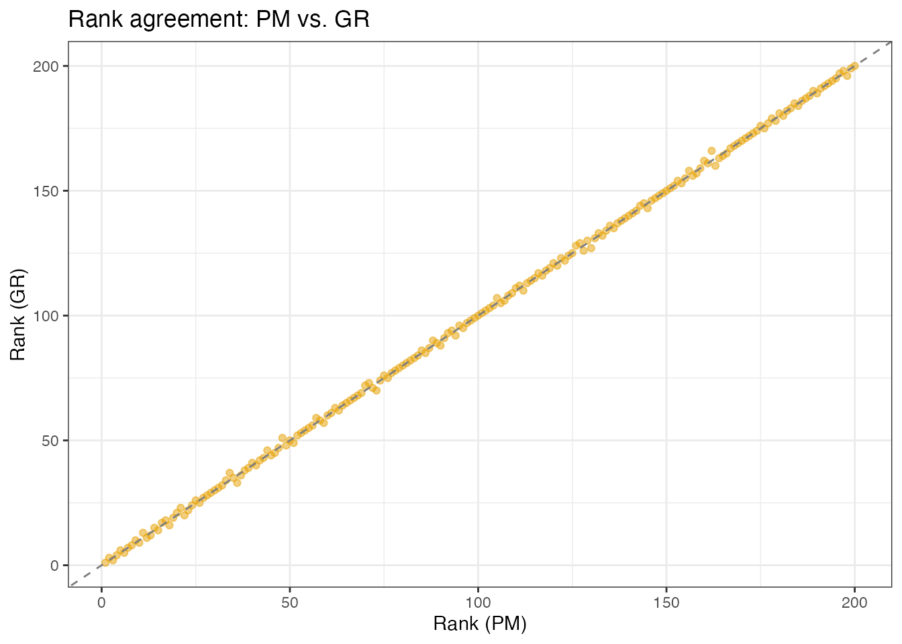

Posterior Summary Methods: Matching Estimators to Inferential Goals
JoonHo Lee
2026-02-11
Source:vignettes/posterior-summaries.Rmd
posterior-summaries.Rmd1. Overview
A Bayesian IRT model delivers a full posterior distribution for every person parameter . Collapsing each posterior to a single point estimate is unavoidable for operational decisions – but which point estimate should you report?
The answer depends on what you plan to do with the numbers. This vignette introduces three posterior summary methods shipped with DPMirt — posterior mean (PM), constrained Bayes (CB), and triple-goal (GR) — and shows how to match each one to the inferential goal at hand. The discussion tracks the framework developed in Lee & Wind (APM manuscript) and the foundational theory of Louis (1984), Ghosh (1992), and Shen & Louis (1998).
Key take-away. No single set of point estimates simultaneously minimises all three loss functions. Choosing an estimator is choosing a loss function; choosing a loss function is choosing an inferential goal.
2. Three Inferential Goals
Bayesian decision theory tells us that the optimal point estimate minimises the expected posterior loss. Different loss functions lead to different estimators. The table below maps three common inferential goals in criterion-based assessment (CBA) to the loss function each implies and the estimator that minimises it.
| Goal | Target | Loss Function | Example Question | Optimal Estimator |
|---|---|---|---|---|
| 1. Individual traits | True | MSEL: | What is this student’s ability? | Posterior Mean (PM) |
| 2. Ranking | True rank | MSELR: | Which 5 students need intervention? | Triple-Goal (GR) |
| 3. Distribution recovery | True EDF | KS: | What proportion scored below the cutoff? | Triple-Goal (GR) |
A concrete CBA scenario
Consider a universal screening programme in which 200 elementary students complete a 25-item mathematics assessment. A school psychologist might ask three distinct questions about the same data:
- Individual scoring. “What is Student 47’s latent ability?” – Report the PM estimate and its credible interval.
- Ranking. “Which five students fall in the bottom 5% and need Tier 2 support?” – Report the GR estimates and select the five lowest.
- Distribution recovery. “What proportion of the cohort falls below the state proficiency cutoff ?” – Compute the empirical distribution of GR estimates and evaluate .
Each question calls for a different estimator. Using PM for all three preserves the ranking, but the distribution-level summary is distorted by shrinkage.
“No single set of point estimates simultaneously minimises all three loss functions.” — Lee & Wind (APM manuscript)
3. The Shrinkage Problem
Why posterior means compress the distribution
The posterior mean for person under an exchangeable hierarchical model can be written as a weighted combination of the likelihood-based estimate and the prior mean:
where the shrinkage weight is
For every person, , so each PM estimate is pulled toward the grand mean. The direct consequence is that the variance of the PM estimates is smaller than the variance of the true abilities:
This under-dispersion is a feature when the goal is individual-level accuracy (Goal 1), because it reduces mean squared error. But it is a liability for Goals 2 and 3: the empirical distribution of PM estimates is too narrow, so tail probabilities are systematically mis-estimated and extreme ranks are compressed toward the centre.
Visualising shrinkage
The figure below loads a pre-computed bimodal simulation (, 25 items, Rasch). The true density has two modes; PM fills the valley.
comp <- readRDS(find_extdata("vignette_estimates_comparison.rds"))
N <- length(comp$true_theta)
df_shrink <- data.frame(
value = c(comp$true_theta,
comp$dpm$theta$theta_pm,
comp$dpm$theta$theta_cb,
comp$dpm$theta$theta_gr),
Method = factor(rep(c("True", "PM", "CB", "GR"), each = N),
levels = c("True", "PM", "CB", "GR"))
)
ggplot(df_shrink, aes(x = value, colour = Method, fill = Method)) +
geom_density(alpha = 0.15, linewidth = 0.9) +
scale_colour_manual(values = c(True = unname(palette_dpmirt["true"]),
PM = unname(palette_dpmirt["pm"]),
CB = unname(palette_dpmirt["cb"]),
GR = unname(palette_dpmirt["gr"]))) +
scale_fill_manual(values = c(True = unname(palette_dpmirt["true"]),
PM = unname(palette_dpmirt["pm"]),
CB = unname(palette_dpmirt["cb"]),
GR = unname(palette_dpmirt["gr"]))) +
labs(title = "Shrinkage and de-shrinkage under a DPM prior",
subtitle = "Bimodal population, 25 items, 200 persons",
x = expression(theta), y = "Density") +
theme_bw() +
theme(legend.position = "top")PM (red) compresses the distribution. CB (blue) and GR (green) progressively de-shrink the estimates, with GR tracking the true density most closely.
What to look for. PM (red) is the most compressed: the valley between the two modes is partially filled and the tails are thin. CB (blue) widens the distribution by matching the first two moments, restoring much of the true spread. GR (green) tracks the true density (gray) most closely, preserving both modes and the valley between them.
If the pre-computed data are not installed, the figure above will not
render. See vignette("simulation-study") for generation
instructions.
4. Posterior Mean (PM) Estimator
Definition
The posterior mean for person is simply the average of the retained MCMC draws:
Under squared-error loss this is the Bayes-optimal point estimate.
DPMirt returns it as theta_pm whenever you call
dpmirt_estimates().
Code
# Compute only the posterior mean
est <- dpmirt_estimates(fit, methods = "pm")
# Inspect first few values
head(est$theta[, c("theta_pm", "theta_psd")])When to use PM
| Situation | Recommendation |
|---|---|
| Reporting a single ability score for an individual | PM is optimal |
| Building a profile across multiple sub-tests | PM for each sub-test |
| Feeding estimates into a downstream regression | PM minimises attenuation |
| Identifying extreme students for intervention | Prefer GR (see Section 6) |
PM is the safest default when the consumer of the scores will interpret them one person at a time.
5. Constrained Bayes (CB) Estimator
Idea
Ghosh (1992) proposed a simple moment-matching correction: rescale the PM estimates so that their first two moments match those of the marginal empirical distribution. This removes the systematic under-dispersion caused by shrinkage while retaining the Bayesian ranking.
Formula
Let be the grand mean of the PMs, their variance, and the average posterior variance. Then
The two constraints are:
- Mean preservation: (same grand mean as PM).
- Variance inflation: (restores the marginal variance).
The correction factor is always : CB estimates are always at least as dispersed as PM estimates.
Code
# Compute PM and CB
est <- dpmirt_estimates(fit, methods = c("pm", "cb"))
# CB estimates alongside PM
head(est$theta[, c("theta_pm", "theta_cb")])Quality flags
When the posterior means have near-zero variance (e.g., a very short
test or extremely strong prior), the CB scaling factor can become
numerically unstable. DPMirt detects this and falls back to PM:
est$quality_flags$cb_fallback will be TRUE. A
scaling factor above 5 triggers a warning stored in
est$quality_flags$cb_extreme_factor.
# Check quality flags
est$quality_flags$cb_fallback
est$quality_flags$cb_extreme_factor6. Triple-Goal (GR) Estimator
Idea
Shen & Louis (1998) designed an estimator that simultaneously optimises three properties: it preserves Bayesian rankings, matches the empirical distribution function, and remains close to the posterior means. In DPMirt the estimator is labeled “GR” after its two key ingredients: the estimated G function (the EDF of the latent trait) and the posterior mean Ranks.
Algorithm (four steps)
The full triple-goal algorithm proceeds as follows:
Step 1. Posterior mean ranks. For each MCMC iteration , rank all persons by their values. Average across iterations to obtain the posterior mean rank:
Step 2. Integer ranks. Convert fractional posterior mean ranks to integer ranks by ranking them:
Step 3. ISEL EDF. The integrated squared error loss (ISEL) estimator of the latent EDF pools all posterior samples:
In practice this is the ECDF of the pooled draws.
Step 4. Quantile placement. Each person’s GR estimate is the quantile of that corresponds to their integer rank:
Intuition
The GR estimator places one estimate at each of equally spaced quantiles of the estimated latent distribution. The ranking step determines which quantile each person occupies; the quantile step determines the location of that estimate on the scale. Because the quantile grid spans the full estimated distribution, the GR estimates reproduce its shape — modes, tails, and gaps are all represented faithfully.
Code
# Compute all three estimators
est <- dpmirt_estimates(fit, methods = c("pm", "cb", "gr"))
# GR estimates with posterior mean ranks
head(est$theta[, c("theta_pm", "theta_gr", "rbar", "rhat")])Quality flags: ties
DPMirt breaks ties in posterior mean ranks randomly by default. Pass
stop_if_ties = TRUE to raise an error instead:
est <- dpmirt_estimates(fit, methods = "gr", stop_if_ties = TRUE)Ties are unusual with continuous posteriors; when they occur it typically signals very low test information for a subset of persons.
7. Side-by-Side Comparison
This section loads the same pre-computed estimates object and produces four complementary views.
7.1 Density overlay
# Build long-format data for ggplot
df_dens <- data.frame(
value = c(comp$true_theta,
comp$dpm$theta$theta_pm,
comp$dpm$theta$theta_cb,
comp$dpm$theta$theta_gr),
method = rep(c("True", "PM", "CB", "GR"),
each = length(comp$true_theta))
)
df_dens$method <- factor(df_dens$method,
levels = c("True", "PM", "CB", "GR"))
ggplot(df_dens, aes(x = value, colour = method, fill = method)) +
geom_density(alpha = 0.12, linewidth = 0.9) +
scale_colour_manual(values = c(True = palette_dpmirt["true"],
PM = palette_dpmirt["pm"],
CB = palette_dpmirt["cb"],
GR = palette_dpmirt["gr"])) +
scale_fill_manual(values = c(True = palette_dpmirt["true"],
PM = palette_dpmirt["pm"],
CB = palette_dpmirt["cb"],
GR = palette_dpmirt["gr"])) +
labs(title = "True vs. PM vs. CB vs. GR densities",
x = expression(theta), y = "Density",
colour = "Method", fill = "Method") +
theme_bw() +
theme(legend.position = "top")
#> Warning: No shared levels found between `names(values)` of the manual scale and the
#> data's colour values.
#> Warning: No shared levels found between `names(values)` of the manual scale and the
#> data's fill values.
#> Warning: No shared levels found between `names(values)` of the manual scale and the
#> data's colour values.
#> Warning: No shared levels found between `names(values)` of the manual scale and the
#> data's fill values.
What to look for. PM (red) is the most compressed. CB (blue) widens the distribution but may not recover multimodal shape. GR (green) tracks the true density (grey) most closely, reproducing both modes and the valley between them.
7.2 Caterpillar plot
When a dpmirt_estimates object is available, the
built-in plot() method produces a caterpillar plot with all
three estimators overlaid.
# Built-in caterpillar plot
plot(est, type = "estimates", param = "theta")Persons are sorted by PM. CB and GR deviate most at the tails.
7.3 Rank scatter
df_rank <- data.frame(
rank_pm = rank(comp$dpm$theta$theta_pm),
rank_gr = rank(comp$dpm$theta$theta_gr)
)
ggplot(df_rank, aes(x = rank_pm, y = rank_gr)) +
geom_point(alpha = 0.5, size = 1.5, colour = palette_dpmirt["dpm"]) +
geom_abline(intercept = 0, slope = 1, linetype = "dashed",
colour = "grey50") +
labs(title = "Rank agreement: PM vs. GR",
x = "Rank (PM)", y = "Rank (GR)") +
theme_bw()
Rank agreement is typically very high in the interior. Discrepancies concentrate in the tails — precisely the students targeted by classification decisions.
7.4 Table of first 10 persons
tab10 <- data.frame(
Person = 1:10,
True = round(comp$true_theta[1:10], 3),
PM = round(comp$dpm$theta$theta_pm[1:10], 3),
CB = round(comp$dpm$theta$theta_cb[1:10], 3),
GR = round(comp$dpm$theta$theta_gr[1:10], 3),
PM_rank = rank(-comp$dpm$theta$theta_pm)[1:10],
GR_rank = rank(-comp$dpm$theta$theta_gr)[1:10]
)
knitr::kable(tab10, caption = "Estimates and ranks for the first 10 persons.")| Person | True | PM | CB | GR | PM_rank | GR_rank |
|---|---|---|---|---|---|---|
| 1 | 1.081 | 1.198 | 1.347 | 1.381 | 26 | 25 |
| 2 | -1.611 | -1.357 | -1.552 | -1.727 | 191 | 192 |
| 3 | -1.530 | -1.878 | -2.142 | -2.228 | 199 | 198 |
| 4 | -1.210 | -0.323 | -0.378 | -0.305 | 127 | 127 |
| 5 | -0.442 | -0.606 | -0.699 | -0.770 | 155 | 156 |
| 6 | -1.088 | -1.339 | -1.532 | -1.508 | 186 | 187 |
| 7 | -1.360 | -1.862 | -2.125 | -2.098 | 197 | 197 |
| 8 | -1.027 | -1.092 | -1.251 | -1.157 | 176 | 175 |
| 9 | 0.783 | -0.080 | -0.103 | -0.157 | 117 | 117 |
| 10 | -0.994 | -0.358 | -0.418 | -0.505 | 140 | 140 |
8. The Role of Test Reliability
Reliability as the dominant moderator
The simulation studies in Lee & Wind show that average test reliability — not sample size — is the dominant moderator of estimator performance. Reliability determines how much shrinkage occurs and therefore how much room there is for estimator choice (and prior choice) to make a difference.
The average shrinkage weight is related to the classical marginal reliability through for long tests under a Rasch model. A rough mapping from reliability to test length is:
| Reliability | ~Items needed | Shrinkage severity | What matters most? |
|---|---|---|---|
| ~10 items | Severe | Estimator choice matters MORE than prior choice | |
| ~23 items | Moderate | Estimator and prior both matter | |
| ~61 items | Mild | Prior choice matters MORE for non-normal G |
Practical implications
- Low reliability (): Shrinkage dominates. CB provides the largest EDF gains; model flexibility matters less because posteriors concentrate around the prior regardless.
- Moderate reliability (): Both estimator and prior contribute meaningfully. DPM + GR starts to outperform Normal + GR for non-normal populations. Most screening instruments (20–30 items) fall in this regime.
- High reliability (): All three estimators converge. Prior choice (DPM vs. Normal) becomes the primary driver of EDF and ranking accuracy for non-normal distributions.
Rule of thumb. If you have a short test and a non-normal population, start with CB. If you have a long test and suspect non-normality, invest in the DPM prior and use GR.
Visualizing the reliability effect
The figure below makes the abstract table concrete. Both panels show a bimodal population estimated with a DPM prior, but the left panel uses a 10-item test () while the right uses a 25-item test ().
# Load both reliability conditions
comp_hi <- readRDS(find_extdata("vignette_estimates_comparison.rds"))
comp_lo <- readRDS(find_extdata("vignette_estimates_comparison_lowrel.rds"))
build_panel <- function(comp_obj, label) {
N <- length(comp_obj$true_theta)
data.frame(
value = c(comp_obj$true_theta,
comp_obj$dpm$theta$theta_pm,
comp_obj$dpm$theta$theta_cb,
comp_obj$dpm$theta$theta_gr),
Method = factor(rep(c("True", "PM", "CB", "GR"), each = N),
levels = c("True", "PM", "CB", "GR")),
Reliability = label
)
}
df_rel <- rbind(
build_panel(comp_lo, "\u03C1 \u2248 0.5 (10 items)"),
build_panel(comp_hi, "\u03C1 \u2248 0.8 (25 items)")
)
df_rel$Reliability <- factor(df_rel$Reliability,
levels = c("\u03C1 \u2248 0.5 (10 items)",
"\u03C1 \u2248 0.8 (25 items)"))
ggplot(df_rel, aes(x = value, colour = Method, fill = Method)) +
geom_density(alpha = 0.15, linewidth = 0.9) +
facet_wrap(~ Reliability, ncol = 2) +
scale_colour_manual(values = c(True = unname(palette_dpmirt["true"]),
PM = unname(palette_dpmirt["pm"]),
CB = unname(palette_dpmirt["cb"]),
GR = unname(palette_dpmirt["gr"]))) +
scale_fill_manual(values = c(True = unname(palette_dpmirt["true"]),
PM = unname(palette_dpmirt["pm"]),
CB = unname(palette_dpmirt["cb"]),
GR = unname(palette_dpmirt["gr"]))) +
labs(title = "Reliability determines when estimator choice matters",
x = expression(theta), y = "Density") +
theme_bw() +
theme(legend.position = "top",
strip.text = element_text(face = "bold", size = 11))Effect of reliability on estimator behavior. Left (, 10 items): PM (red) collapses the bimodal distribution into a sharp unimodal peak — the two modes are completely lost. CB (blue) and GR (green) resist this compression, preserving the two-group structure even with severe shrinkage. Right (, 25 items): all three estimators begin to recover the true bimodal shape, with GR tracking the truth most closely.
At low reliability (left panel), the posterior for each person is heavily shrunk toward the prior center, so the PM distribution collapses to a narrow unimodal peak. CB and GR resist this compression by inflating the variance (CB) or placing estimates at quantiles of the estimated EDF (GR), preserving the two-group structure.
At high reliability (right panel), the data speak loudly enough that
even PM preserves the bimodal shape. The three estimators converge, and
the primary gains come from using the DPM prior rather than the Normal
prior (see Section 5.4 of
vignette("models-and-workflow")).
Quantifying the shrinkage
The table below makes the shrinkage problem concrete with numbers, comparing the standard deviation of each estimator to the true SD.
| Statistic | ρ ≈ 0.5 | ρ ≈ 0.8 |
|---|---|---|
| SD(True) | 0.991 | 0.955 |
| SD(PM) | 0.493 | 0.948 |
| SD(CB) | 0.700 | 1.075 |
| SD(GR) | 0.696 | 1.073 |
| Ratio PM/True | 0.497 | 0.992 |
| Ratio CB/True | 0.707 | 1.125 |
| Ratio GR/True | 0.703 | 1.123 |
Reading the table. The “Ratio” rows reveal the shrinkage severity. At , PM compresses the distribution to roughly half its true spread (ratio ). CB and GR partially resist this compression, recovering about 70% of the true SD (ratio ). At , all three estimators converge toward — or even slightly exceed — the true dispersion (ratios near 1.0), confirming that reliability is the dominant moderator of shrinkage severity.
9. Practical Recommendations
The table below summarises estimator-prior pairings for common operational goals.
| Primary Goal | Estimator | Prior Recommendation |
|---|---|---|
| Individual scoring | PM | Either (Normal or DPM) |
| Identify extreme students | GR | DPM if reliability > 0.7 and non-normal suspected |
| Proportion below cutoff | GR | DPM if reliability > 0.7 |
| Recover full distribution | GR | DPM strongly recommended |
Decision workflow
A simple three-step workflow: 1. Determine your primary goal. What will the scores be used for? If individual feedback, use PM. If classification, ranking, or distributional summaries, use GR. 2. Assess reliability. Estimate from KR-20 or the model’s average posterior variance. If , estimator choice dominates; if , prior choice dominates. 3. Choose the prior. If reliability is high and there is reason to doubt normality (e.g., known floor/ceiling effects, gifted subpopulations, mixed curricula), use a DPM prior. Otherwise a Normal prior is sufficient.
10. Loss Functions for Evaluation
When true parameter values are available (e.g., in a simulation
study), dpmirt_loss() computes the three loss functions
that correspond to the three goals.
Built-in loss functions
# Assume 'fit' was run on simulated data with known true values
est <- dpmirt_estimates(fit, methods = c("pm", "cb", "gr"))
loss <- dpmirt_loss(est, true_theta = sim$theta, true_beta = sim$beta)
print(loss)| Method | MSEL | MSELR | KS |
|---|---|---|---|
| PM | 0.2544 | 0.024992 | 0.095 |
| CB | 0.3029 | 0.024992 | 0.080 |
| GR | 0.3136 | 0.024868 | 0.055 |
The pattern is typical:
- MSEL: PM GR CB — posterior mean minimises individual MSE by construction.
- MSELR: GR PM CB — the triple-goal algorithm directly optimises ranking loss.
- KS: GR CB PM — GR and CB both reduce distributional bias, with GR achieving the tightest fit.
When reliability drops, the loss differences across estimators become more pronounced:
| Reliability | Method | MSEL | MSELR | KS |
|---|---|---|---|---|
| ρ ≈ 0.5 | PM | 0.5561 | 0.054310 | 0.285 |
| ρ ≈ 0.5 | CB | 0.5234 | 0.054310 | 0.220 |
| ρ ≈ 0.5 | GR | 0.5338 | 0.054209 | 0.165 |
| ρ ≈ 0.8 | PM | 0.2544 | 0.024992 | 0.095 |
| ρ ≈ 0.8 | CB | 0.3029 | 0.024992 | 0.080 |
| ρ ≈ 0.8 | GR | 0.3136 | 0.024868 | 0.055 |
Custom loss functions
Supply an arbitrary loss function via custom_loss. The
function must accept two numeric vectors and return a scalar.
# Mean absolute error
mae_loss <- function(est, true) mean(abs(est - true))
loss_mae <- dpmirt_loss(
est,
true_theta = sim$theta,
true_beta = sim$beta,
custom_loss = mae_loss
)
print(loss_mae)See vignette("simulation-study") for a full factorial
comparison of loss across reliability levels, sample sizes, latent
shapes, and priors.
11. Summary and Next Steps
This vignette has shown that:
- The posterior mean (PM) is optimal when the inferential goal is individual-level accuracy (Goal 1: minimise MSEL).
- The constrained Bayes (CB) estimator corrects the under-dispersion of PM by matching the first two moments of the marginal distribution. It is most helpful when reliability is low and a simple correction suffices.
- The triple-goal (GR) estimator simultaneously optimises ranking and distribution recovery (Goals 2 and 3). It is the recommended estimator whenever classification, selection, or distributional summaries are the primary output.
- Test reliability , not sample size, is the dominant moderator of estimator performance. Short tests benefit most from estimator choice; long tests benefit most from prior choice (DPM vs. Normal).
What next?
-
Simulation study. See
vignette("simulation-study")for a full factorial evaluation of prior estimator reliability latent shape. -
Prior elicitation. See
vignette("prior-elicitation")for principled selection of the DPM concentration parameter using the DPprior package. -
Getting started. If you have not yet fit your first
model, see
vignette("getting-started")for the basic DPMirt workflow.
References
- Ghosh, M. (1992). Constrained Bayes estimation with applications. Journal of the American Statistical Association, 87(418), 533–540.
- Lee, J. & Wind, S. Targeting toward inferential goals in Bayesian Rasch models for estimating person-specific latent traits. OSF Preprint. https://doi.org/10.31219/osf.io/qrw4n
- Louis, T. A. (1984). Estimating a population of parameter values using Bayes and empirical Bayes methods. Journal of the American Statistical Association, 79(386), 393–398.
- Paganin, S., Paciorek, C. J., Wehrhahn, C., Rodríguez, A., Rabe-Hesketh, S., & de Valpine, P. (2023). Computational strategies and estimation performance with Bayesian semiparametric item response theory models. Journal of Educational and Behavioral Statistics, 48(2), 147–188. https://doi.org/10.3102/10769986221136105
- Shen, W., & Louis, T. A. (1998). Triple-goal estimates in two-stage hierarchical models. Journal of the Royal Statistical Society: Series B, 60(2), 455–471.
#> R version 4.5.1 (2025-06-13)
#> Platform: aarch64-apple-darwin20
#> Running under: macOS Tahoe 26.2
#>
#> Matrix products: default
#> BLAS: /Library/Frameworks/R.framework/Versions/4.5-arm64/Resources/lib/libRblas.0.dylib
#> LAPACK: /Library/Frameworks/R.framework/Versions/4.5-arm64/Resources/lib/libRlapack.dylib; LAPACK version 3.12.1
#>
#> locale:
#> [1] C.UTF-8/C.UTF-8/C.UTF-8/C/C.UTF-8/C.UTF-8
#>
#> time zone: America/Chicago
#> tzcode source: internal
#>
#> attached base packages:
#> [1] stats graphics grDevices utils datasets methods base
#>
#> other attached packages:
#> [1] ggplot2_4.0.2 DPMirt_0.1.0
#>
#> loaded via a namespace (and not attached):
#> [1] gtable_0.3.6 jsonlite_2.0.0 dplyr_1.2.0
#> [4] compiler_4.5.1 tidyselect_1.2.1 parallel_4.5.1
#> [7] dichromat_2.0-0.1 jquerylib_0.1.4 systemfonts_1.3.1
#> [10] scales_1.4.0 textshaping_1.0.1 yaml_2.3.12
#> [13] fastmap_1.2.0 lattice_0.22-7 coda_0.19-4.1
#> [16] R6_2.6.1 labeling_0.4.3 generics_0.1.4
#> [19] igraph_2.2.1 nimble_1.4.0 knitr_1.50
#> [22] htmlwidgets_1.6.4 tibble_3.3.1 desc_1.4.3
#> [25] pillar_1.11.1 bslib_0.9.0 RColorBrewer_1.1-3
#> [28] rlang_1.1.7 cachem_1.1.0 xfun_0.53
#> [31] fs_1.6.6 sass_0.4.10 S7_0.2.1
#> [34] cli_3.6.5 withr_3.0.2 pkgdown_2.2.0
#> [37] magrittr_2.0.4 digest_0.6.37 grid_4.5.1
#> [40] lifecycle_1.0.5 vctrs_0.7.1 evaluate_1.0.5
#> [43] pracma_2.4.6 glue_1.8.0 farver_2.1.2
#> [46] numDeriv_2016.8-1.1 ragg_1.4.0 rmarkdown_2.30
#> [49] tools_4.5.1 pkgconfig_2.0.3 htmltools_0.5.8.1